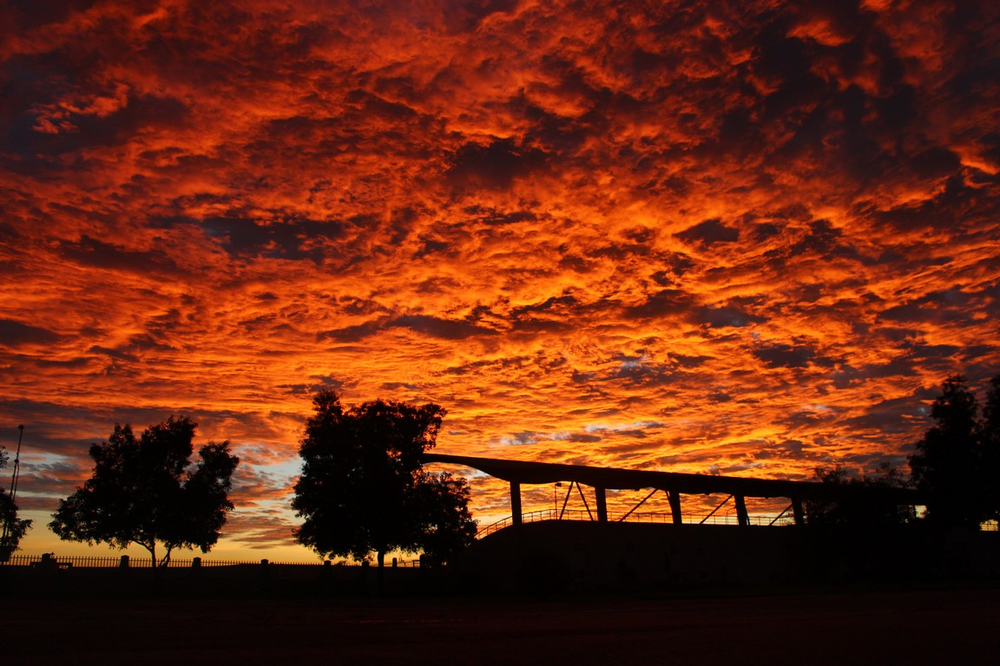
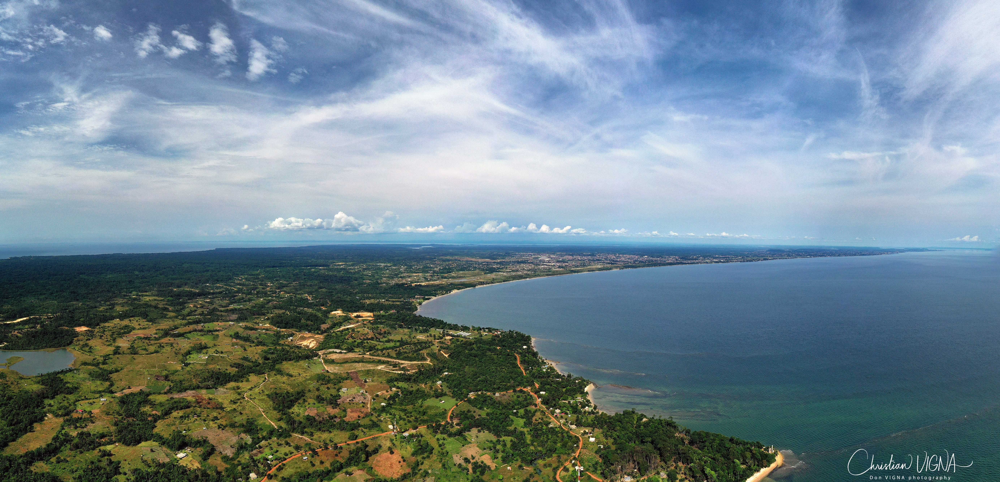
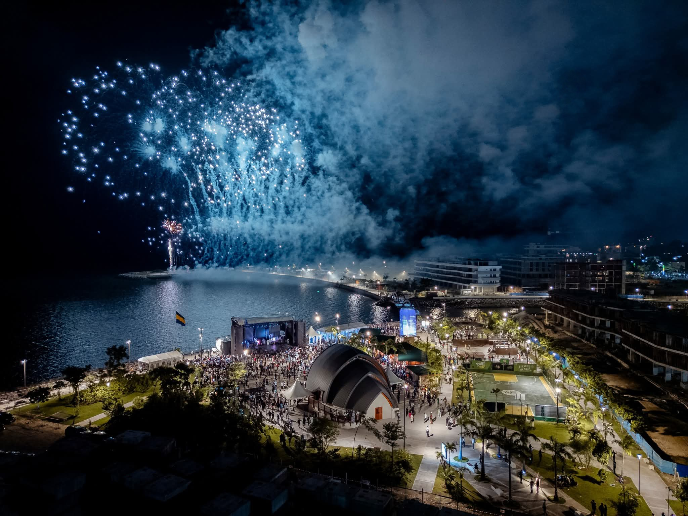

Images
Regards sur le pays



République d'Afrique centrale, le Gabon est l'un des pays les plus boisés du continent, avec plus de 88 % de son territoire recouvert de forêts équatoriales.
Le Gabon, officiellement la République gabonaise, est un État d'Afrique centrale bordant l'Atlantique. Il est limité au nord par le Cameroun et la Guinée équatoriale, au sud et à l'est par le Congo. Sa capitale est Libreville.
Avec une superficie de 267 667 km² et une population d'environ 2,3 millions d'habitants, le Gabon est l'un des pays les moins densément peuplés d'Afrique, ce qui a permis la préservation remarquable de ses forêts équatoriales.
Le pays est traversé par l'équateur et bénéficie d'un climat équatorial chaud et humide, favorisant une biodiversité exceptionnelle classée parmi les plus riches au monde.

| Indicateur | Données |
|---|---|
| Capitale | Libreville |
| Superficie | 267 667 km² |
| Population | ≈ 2,3 millions d'habitants |
| Langue officielle | Français |
| Monnaie | Franc CFA (XAF) |
| Régime politique | République présidentielle |
| Couverture forestière | 88 % du territoire |
| Ressources principales | Pétrole, manganèse, bois, biodiversité |
| Nombre de provinces | 9 provinces |
| IDH | 0,706 — élevé pour l'Afrique subsaharienne |
Deux vidéos viennent renforcer le rendu du site avec une présence visuelle plus moderne et plus vivante.


Avec 13 parcs nationaux couvrant 11 % de son territoire, le Gabon est un leader mondial de la conservation. La forêt gabonaise constitue l'un des plus grands puits de carbone d'Afrique.
L'économie gabonaise repose sur les hydrocarbures (pétrole), l'exploitation minière (manganèse) et forestière. Le Gabon a l'un des PIB par habitant les plus élevés d'Afrique subsaharienne.
Comptant plus de 40 groupes ethniques (Fang, Myènè, Bakélé, Nzebi…), le Gabon est riche d'une diversité culturelle extraordinaire avec des traditions et des arts uniques.
Le Gabon investit dans l'éducation et la santé, avec un IDH parmi les plus élevés d'Afrique subsaharienne. Le taux d'urbanisation dépasse 87 %.
Traversé par plusieurs fleuves dont l'Ogooué, le pays présente un relief varié allant des plaines côtières aux massifs montagneux de l'est, dont les Monts Cristal.
Membre de l'Union Africaine, de la CEMAC et de l'OIF, le Gabon joue un rôle actif dans la diplomatie africaine et la conservation internationale.